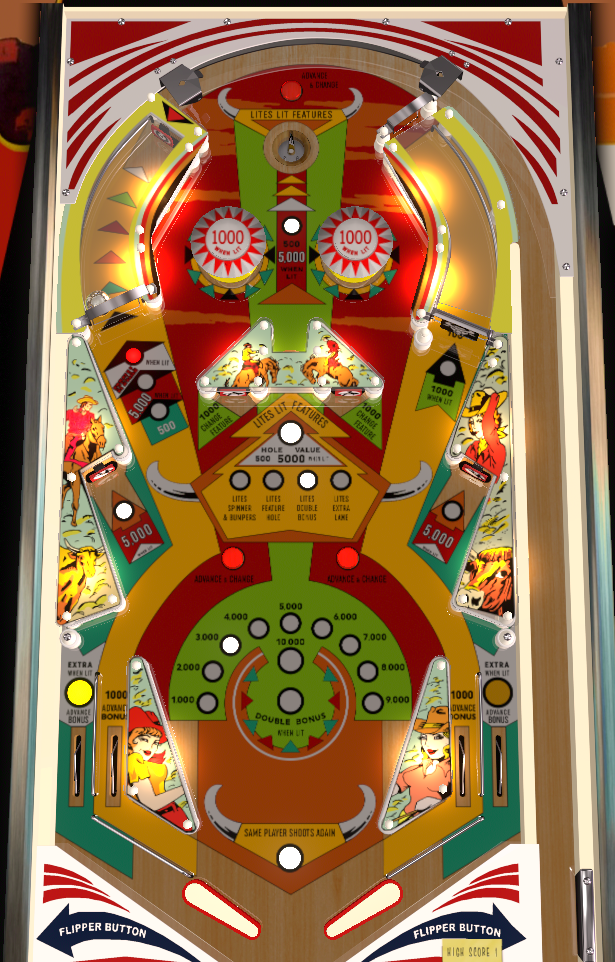

Rawhide is the 4 player version. Stampede is the otherwise identical 2 player version. Production was split between the two companies during a buyout; the game is also the same regardless of whether it is listed as Chicago Coin or Stern.
Making either saucer lights the indicated feature on the center of the playfield. The three rollover buttons labelled Advance and Change, as well as the two center standup targets labelled Change, rotate which feature is indicated. The best feature to light is Spinner and Bumpers along with a right spinner all day strategy; a close second best is Double Bonus. Light Hole makes the saucers worth 5,000- nice to have but not necessary- and Light Extra's value is determined by whether extra balls have value.
By default, the saucers score 500 points. The rollover buttons and center standup targets change which feature is indicated. Entering a saucer lights the indicated feature. "Spinner and Bumpers" increases the value of the spinner and bumpers from 100 points to 1,000; "Feature Hole" increases the value of each individual saucer to 5,000 points; "Double Bonus" is self-explanatory; "Extra" lights the out lanes alternately for extra ball.
The center saucer can be entered from above or below, but shooting it from below is generally not advised due to the high center drain risk on a missed shot. The top saucer shoots downward and the center saucer shoots upward, so with good luck/a bit of nudging, the saucers can pass the ball to each other, good for some safe points, especially if the saucers are lit. By far the best strategy, though, is to light the spinner and bumpers and just make your way back to the top of the table via the spinner until the cows come home.
Hitting the captive ball hard enough that the standup target in the back of the lane is registered scores and advances the captive ball value. Captive ball values are 500 points - 5,000 points - special - back to 500 points and repeating. There are no switches in the captive ball lane or any other scoring features.
One of the two targets will always be lit for 5,000 points; the unlit target scores 500. Which target is lit alternates every time a rollover button is triggered.
Rawhide has a conventional in/out lane setup. All lanes award 1,000 points and a bonus advance. Lighting "Extra" at the saucers will light one of the out lanes for extra ball, which alternates each time a rollover button is triggered, just like the lower standup targets. There are no kickbacks, gates, or center posts.
Bonus is advanced by rollover buttons and in/out lanes. Bonus is doubled by lighting feature #3 at the saucers. Max bonus is 2x 19,000 = 38,000 points. Double bonus is never given for free. There is no bonus holdover or midball bonus collect.